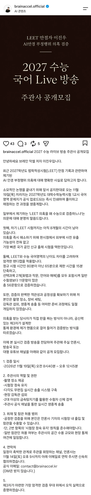
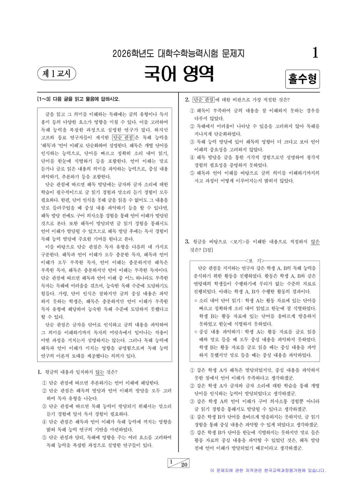
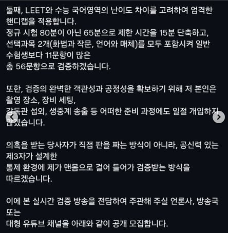
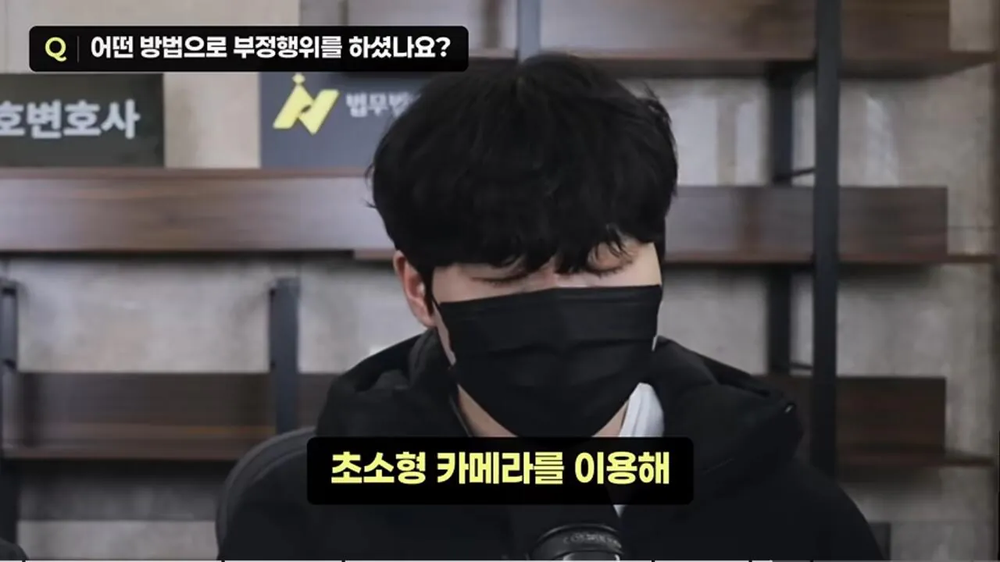
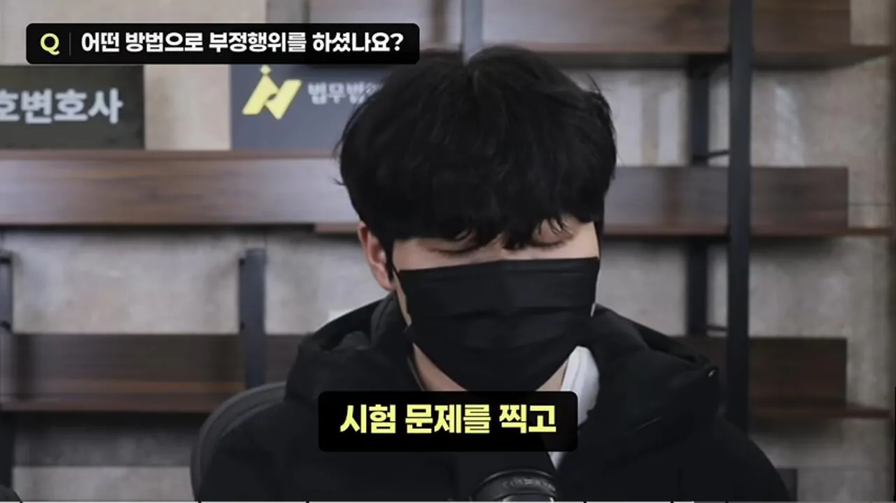
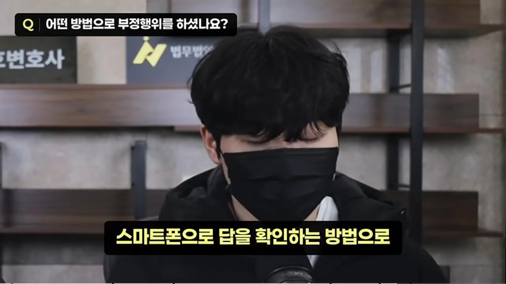
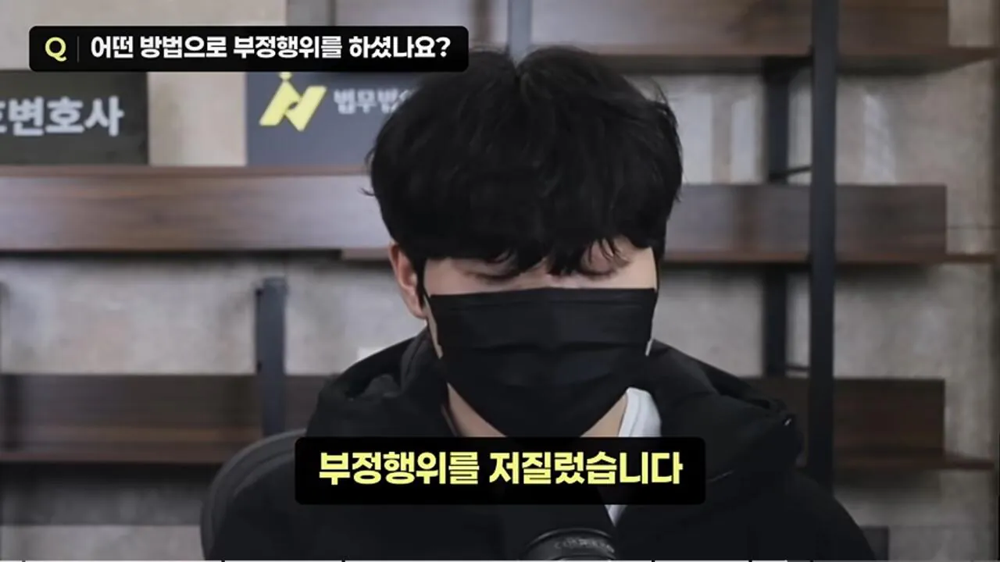

11월 13일에 올린 테스트 공개 공지
이때만해도 사람들은 ai 조작 하면
ai 안경을 떠올리고 있었음
즉 리트냥이는 안경만 안쓰고 나타나면 옷에 쌀알 카메라를 붙이고 어떤식으로든 조작이 가능하겠다고 생각
테스트를 하기로 함

수능시험은 세무시험과는 달리 100% 객관식이라서 주작하기도 훨씬 쉬움

뭐 시간을 80분에서 65분으로 줄이고 수험생보다 11문항이 많은 56문항으로 검증한다고 하는데
ai 쓰면 65분이 아니라 훨씬 더 짧은 시간으로 문제 다 풀 수 있음.
즉 아무 의미없는 추가 내용인거...
그런데




11월 15일 세무냥이가 부정행위를 했다고 자백을함
그러면서 자신은 ai안경을 안썼고 다른 방법을 썼다며 어떤 방법을 썼는지 대략적으로 설명함
그리고 그건 ai 안경이 아닌 쌀알같은 소형 카메라를 이용한 주작방법이었음
사람들은 이제 ai 안경 뿐만 아니라 다른 주작 방법들을 알게 됨

더이상 방법이 없는 리트냥이는 결국 수능당일날 런 침...
결국 수능 며칠전 세무냥이가 자백하고 주작 방법을 불어버린것이 리트냥이에게는 치명타였음
설령 라이브중에 주작이 걸릴값이라도 뭔가도 해보지도 못하고 런치게 만듬
https://www.youtube.com/watch?v=wApkPtSJzog
참고로 쌀알카메라와 쌀알이어폰은 금속탐지기로도 적발이 쉽지 않다고 함
단독 초소형 렌즈의 한계. 쌀알 크기(약 2mm 내외)로 극도로 소형화된 카메라 렌즈나 이어폰 자체만으로는 금속 질량이 너무 적어 일반 금속탐지기가 놓칠 수 있습니다
저게가능햇다니 내 재미나이는 세무사기출 다틀리던데